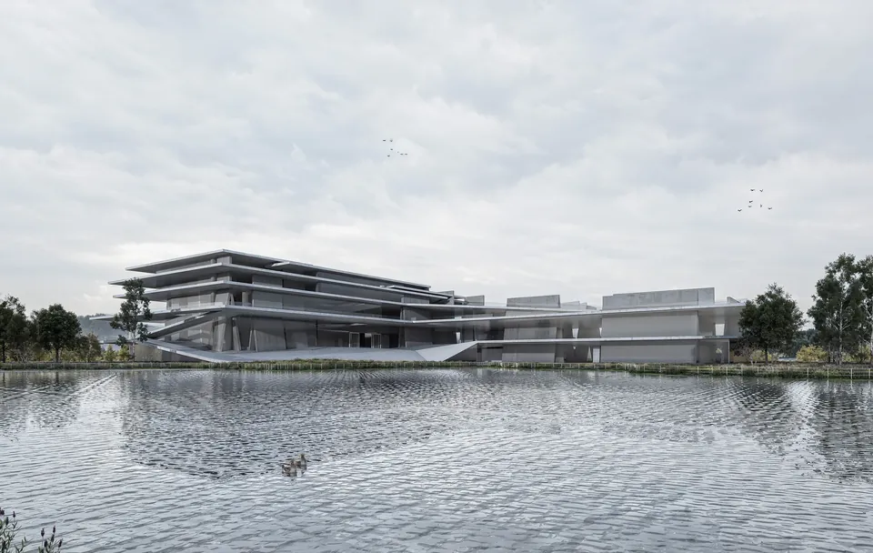
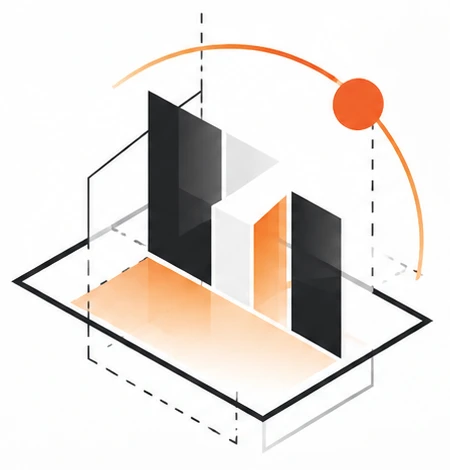
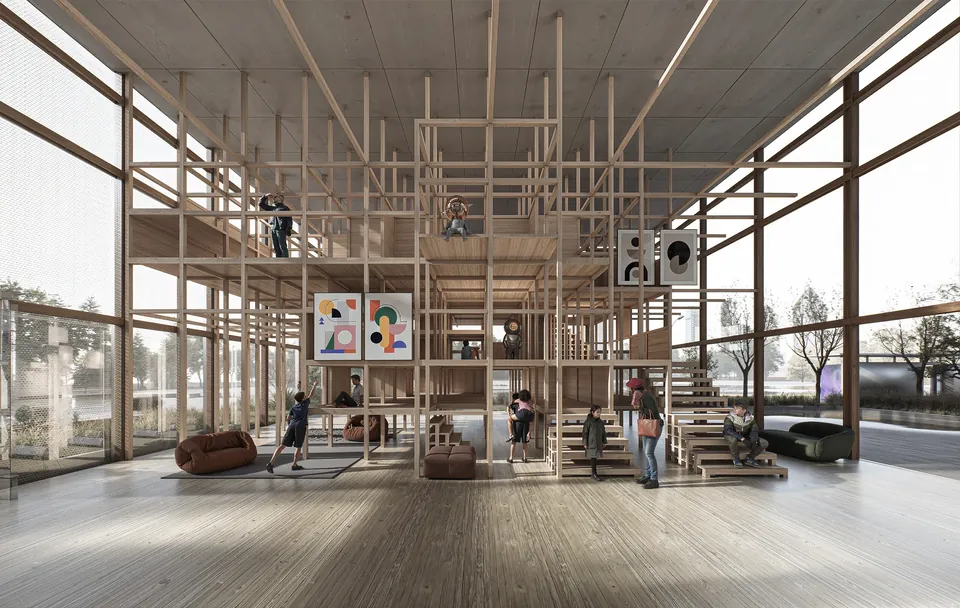
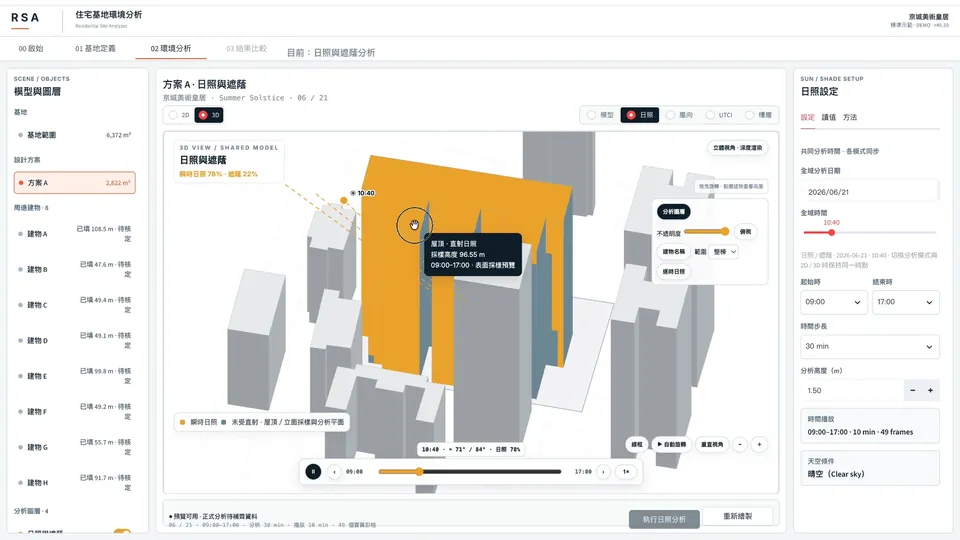
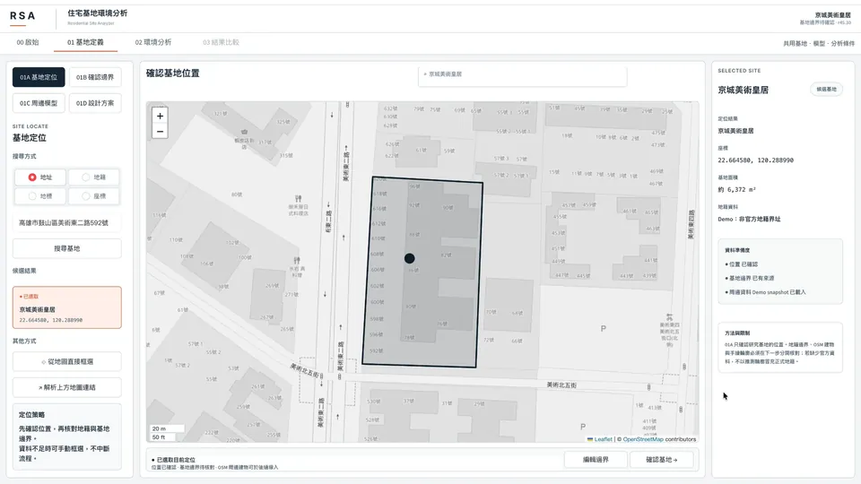
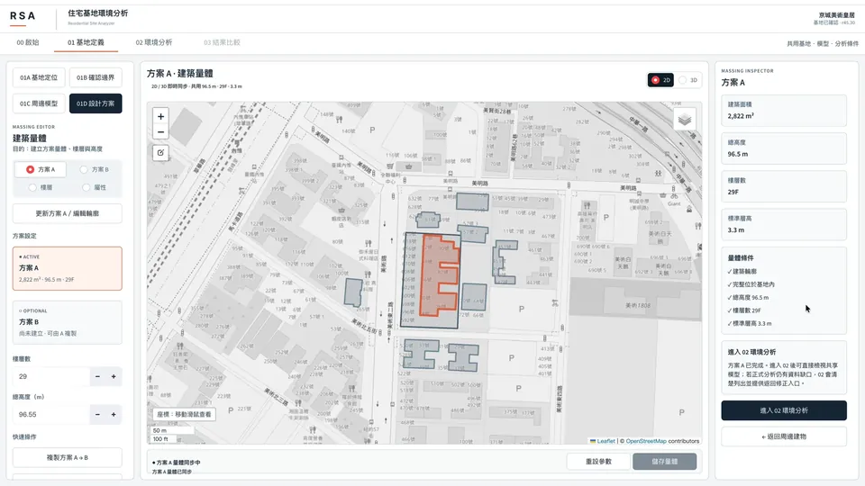
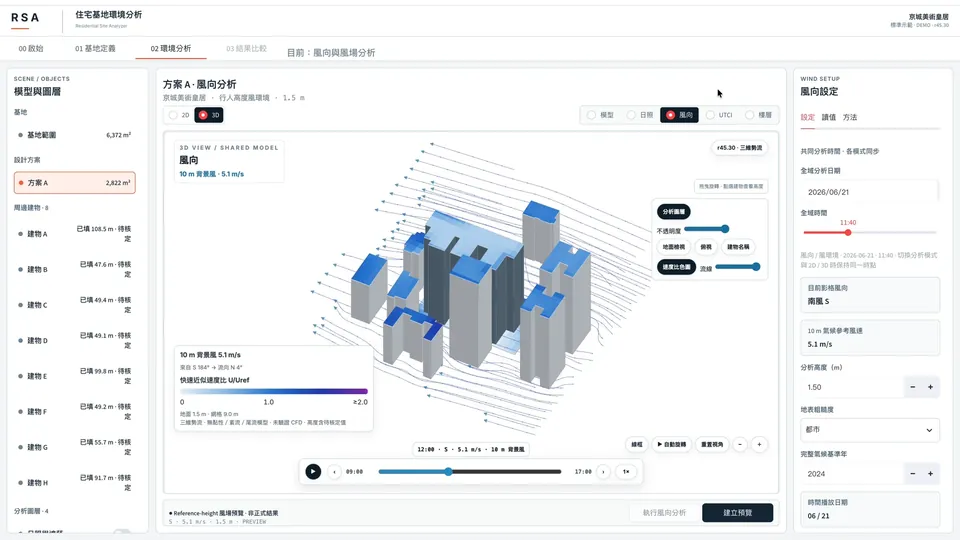
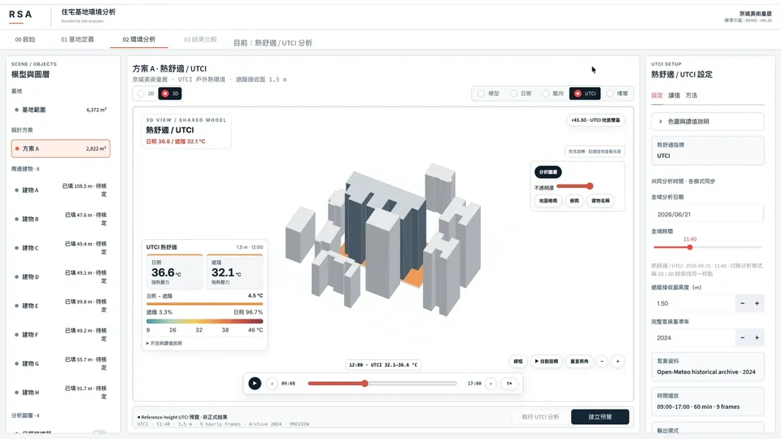

Understand the environment.Shape the future.
Design-led spatial thinking. Evidence-driven environmental research. Technology that connects them.
先見環境，再築未來。
What we are building In developmentResidential Site Analyzer — a research tool that turns a residential site’s sun, shade, wind and outdoor heat into evidence for early design decisions.See the platform →

Residential
Site Analyzer住宅基地環境分析by RSA.
What RSA stands for
Responsive
Respond to climate, surroundings and the people who will live there.
Space
Sites, homes, public space and everyday life.
Architecture
Design and analysis as one continuous way of working.
RSA starts from architectural and spatial design, then adds site analysis, digital simulation and its own software research. We look at how space answers to sun, wind, heat and people—and try to turn complex environmental information into evidence that can be understood and traced.
RSA is the company brand. Residential Site Analyzer is the research platform it develops.
A site’s sun, its neighbours, its heat and its habits shape a space before any rendering does.
Good architecture should start from understanding where it stands. RSA grew out of the founder’s spatial-design training and residential development work, where environmental questions came up early and were hard to answer.
Can a site be understood more clearly before design begins? How do floors, hours and massing options differ? Can the results be explained to people without an engineering background—and do they actually improve the design?
Expertise

DRSA Design
Designing buildings, and rethinking how life happens in them.
Spatial concepts, site layout and massing, early residential planning, façade and material strategy, and design visualisation—grounded in the founder’s academic work and residential practice.
- Spatial & architectural concepts
- Site layout & massing
- Early residential planning
- Façade & material strategy
- Design visualisation
Founder’s experience. RSA does not offer statutory architect services.
ERSA Environment
Making invisible site conditions into design evidence you can read.
The founder’s projects predate RSA and were not analysed with it. What follows is Residential Site Analyzer, a separately developed research prototype.





What the prototype explores today. Each module is marked by how far along it really is.
- M1Site contextRealMap-based parcel and surroundings
- M2Building massingRealTarget building, neighbours, A/B schemes
- M3Solar & shadingRealTime- and floor-aware shadow study
- M4WindExploratoryDirectional preview — not CFD
- M5UTCI comfortExploratoryResearch view; inputs and limits disclosed
TRSA Technology
Tools that explain the environment, built from design questions.
AI may only organise and explain analysis evidence that has a source. It never invents results and never replaces physical simulation.
Residential Site Analyzer
Python / Streamlit research prototype for site, massing, sun and shade, wind preview and UTCI-oriented comfort.
RSA Studio
A/B design, cross-floor and time comparison, decision visualisation and report summaries.
RSA Intelligence
Sourced explanations of results through large language models such as the Claude API, with human review.
How we plan to use ClaudeThe work comes first.
Academic design and residential projects are where the questions came from. Each one is credited to its real author and role. None were RSA commissions or analysed with RSA.


Light, enclosure and scale change how a place is lived in. That is the question RSA tries to make measurable.
Five steps.
One loop.
How RSA intends design and analysis to feed each other. It describes the method going forward—it is not a claim about how the earlier projects were designed.
- 01Observe
Site, neighbours, climate, people and use.
- 02Analyze
Suitable models and data, with assumptions stated.
- 03Design
Bring conditions into layout, massing, space and materials.
- 04Evaluate
Compare options with indicators that fit the question.
- 05Refine
Keep limits and uncertainty visible; keep improving.
The question is not whether it can compute.
It is whether the result can be used.
The current study focuses on early decisions for new housing, with Kaohsiung as the case city. RSA does not replace Radiance, CFD or EnergyPlus; it studies how their kind of evidence can be read and used earlier.
Can environmental differences between floors, times and schemes be identified reliably?
Technical
技術驗證
Cross-check shading and calculation error against reference tools.
Are the integrated results understood more easily than scattered information?
Real cases
真實案例驗證
Check real Kaohsiung sites and surrounding heights; compare A/B schemes under controlled conditions.
Does that understanding support better early-stage decisions?
Users
使用者驗證
Same data, same task, only the presentation changes: compare accuracy, time and quality of reasoning.
Prototype & core workflow
- Site location, boundary & surrounding massing
- Sun, shade, wind direction & UTCI views
- Floor & time comparison, A/B schemes
- Report & evidence output
Reliability & real cases
- Sun / shade reference comparison
- Real Kaohsiung site case
- Consistency across views, data & reports
User research
- Authoritative site-data integration (assessment)
- Case-data completeness
- 10–15 person user pilot
- Formal comprehension & decision study
Built features still require continued verification. Status compiled from project version records.
Shadow IoU vs. Radiance
Intersection-over-union against a Radiance direct-shadow reference on archived cases. Version-specific.
Hausdorff distance
Boundary difference in one recorded comparison setup; archived data also notes an area bias of about −2.05%. Version-specific.
Regression tests passed
Historically marked PASS. Not proof that newer builds or all modules meet a scientific acceptance threshold.